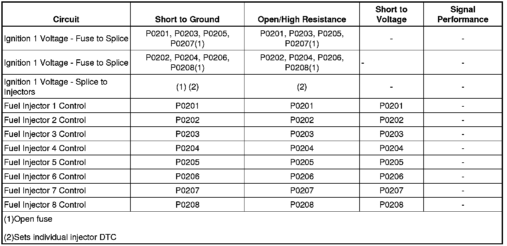

P0201
DTC P0201, P0202, P0203, P0204, P0205, P0206, P0207, or P0208
Diagnostic Instructions
* Perform the Diagnostic System Check - Vehicle (Initial Inspection and Diagnostic Overview) prior to using this diagnostic procedure.
* Review Strategy Based Diagnosis (Initial Inspection and Diagnostic Overview) for an overview of the diagnostic approach.
* Diagnostic Procedure Instructions (Initial Inspection and Diagnostic Overview)provides an overview of each diagnostic category.
DTC Descriptors
DTC P0201
- Injector 1 Control Circuit
DTC P0202
- Injector 2 Control Circuit
DTC P0203
- Injector 3 Control Circuit
DTC P0204
- Injector 4 Control Circuit
DTC P0205
- Injector 5 Control Circuit
DTC P0206
- Injector 6 Control Circuit
DTC P0207
- Injector 7 Control Circuit
DTC P0208
- Injector 8 Control Circuit
Diagnostic Fault Information

Circuit/System Description
The control module enables the appropriate fuel injector pulse for each cylinder. Ignition voltage is supplied to the fuel injectors. The control module controls each fuel injector by grounding the control circuit via a solid state device called a driver. The control module monitors the status of each driver. If the control module detects an incorrect voltage for the commanded state of the driver, a fuel injector control circuit DTC sets.
Conditions for Running the DTC
* The engine is running.
* The ignition voltage is more than 11 volts for 5 seconds.
* DTCs P0201-P0208 run continuously when the above conditions are met.
Conditions for Setting the DTC
* The control module detects an incorrect voltage on the fuel injector control circuit.
* The above condition is met for 1 second.
Action Taken When the DTC Sets
DTCs P0201-P0208 are Type B DTCs.
Conditions for Clearing the MIL/DTC
DTCs P0201-P0208 are Type B DTCs.
Diagnostic Aids
Performing the Fuel Injector Diagnosis may help isolate an intermittent condition. Refer to Fuel Injector Diagnosis (w/CH47976) (Fuel Injector Diagnosis (With CH 47976))Fuel Injector Diagnosis (w/J39021 or w/Tech 2) (Fuel Injector Diagnosis (w/J39021 or w/Tech 2)) .
Reference Information
Schematic Reference
Engine Controls Schematics (Electrical Diagrams)
Connector End View Reference
Component Connector End Views (Connector Views)
Electrical Information Reference
* Circuit Testing (Component Tests and General Diagnostics)
* Connector Repairs (Component Tests and General Diagnostics)
* Testing for Intermittent Conditions and Poor Connections (Component Tests and General Diagnostics)
* Wiring Repairs (Component Tests and General Diagnostics)
DTC Type Reference
Powertrain Diagnostic Trouble Code (DTC) Type Definitions (Diagnostic Trouble Code Descriptions)
Scan Tool Reference
Control Module References (Programming and Relearning)for scan tool information
Special Tools Required
J 34730-405 Injector Test Lamp
Circuit/System Verification
With the engine running, observe the scan tool cylinder injector circuit status parameters. The parameters should display OK.
Circuit/System Testing
1. Remove the engine sight shield.
2. Ignition OFF, disconnect the affected fuel injector harness connector at the fuel injector.
3. Ignition ON, verify that the test lamp illuminates between the ignition 1 voltage circuit terminal A and ground.
• If the test lamp does not illuminate, test the ignition 1 voltage circuit for a short to ground or an open/high resistance.
4. Connect the J 34730-405 between the control circuit terminal B and the ignition 1 voltage circuit terminal A. Start the engine.
• If the test lamp flashes, replace the fuel injector.
• If the test lamp does not flash, test for an open, high resistance, or a short to voltage in the control circuit of the fuel injector. If the circuit tests normal, replace the ECM.
• If the test lamp remains illuminated at all times, test for a short to ground in the control circuit of the fuel injector. If the circuit tests normal, replace the ECM.
Repair Instructions
Perform the Diagnostic Repair Verification (Verification Tests) after completing the diagnostic procedure.
* Control Module References (Programming and Relearning)for ECM replacement, setup, and programming
* Fuel Injector and Fuel Rail Replacement (Service and Repair)